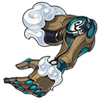

추천 광추
갤럭시 시티에 오신 것을 환영합니다
속도와 변신 환락 화력
효과 자세히
160~200 속도 세팅과 변신 딜링에 맞춘 전광.
오늘의 행운
치명타·환락 피해
효과 자세히
팀 치확과 히든 스코어 증가분 재계산.
슈룸 모험기
망각의 정원 상점 대안
효과 자세히
무료 환락 광추로 사용.
추천 유물
빛나는 공훈의 마법 소녀 4 · 0호 스테이지 펑크 로드 2
- 머리 주옵션HP부옵션속도 · 치명타 확률 · 치명타 피해
- 손
 주옵션공격력부옵션속도 · 치명타 확률 · 치명타 피해
주옵션공격력부옵션속도 · 치명타 확률 · 치명타 피해 - 몸통
 주옵션치명타 확률부옵션속도 · 치명타 피해
주옵션치명타 확률부옵션속도 · 치명타 피해 - 다리
 주옵션속도부옵션치명타 확률 · 치명타 피해
주옵션속도부옵션치명타 확률 · 치명타 피해 - 구체 주옵션HP% / 방어력%부옵션속도 · 치명타 확률 · 치명타 피해
- 매듭 주옵션HP% / 방어력%부옵션속도 · 치명타 확률 · 치명타 피해
이 조합을 추천하는 이유
환락 피해가 중심인 세팅. 구체·매듭은 속도와 치명타 부옵부터 비교.
천명에 응해 먼 길을 떠난 점술가 4 · 0호 스테이지 펑크 로드 2
- 머리
 주옵션HP부옵션속도 · 치명타 확률 · 치명타 피해
주옵션HP부옵션속도 · 치명타 확률 · 치명타 피해 - 손

주옵션공격력부옵션속도 · 치명타 확률 · 치명타 피해 - 몸통
 주옵션치명타 확률부옵션속도 · 치명타 피해
주옵션치명타 확률부옵션속도 · 치명타 피해 - 다리
 주옵션속도부옵션치명타 확률 · 치명타 피해
주옵션속도부옵션치명타 확률 · 치명타 피해 - 구체 주옵션HP% / 방어력%부옵션속도 · 치명타 확률 · 치명타 피해
- 매듭 주옵션HP% / 방어력%부옵션속도 · 치명타 확률 · 치명타 피해
이 조합을 추천하는 이유
환락 지원 세트를 맡을 아군이 비어 있을 때 사용.
이 정도면 잘 키웠다
세팅에 따른 목표값 · —는 출처에 별도 기준 없음
| 스탯 | 추천 스탯 | 준종결 | 종결 |
|---|---|---|---|
| 속도 | 200+[1]원본 상한 260. | — | 210 |
| 치명타 확률 | 84%+[2]효광 전용 광추 치명타 확률 10% 참고. | — | 82% |
| 치명타 피해 | — | — | 170% |
육성 단계의 기준
준종결 수치는 원본 시트에 없습니다. 추천과 종결은 별도 세팅입니다. 종결 표의 기본 전제는 5성 명함·전용 광추 (마법소녀 / 펑크 로드)입니다.
성혼과 추천 돌파
변신 연결은 1돌, 스코어 120pt마다 추가 행동은 2돌. 아하 승격은 히든 스코어 상한과 환산을 별도로 강화.
1결계 받는 피해 +20%추천
변신 종료 후 히든 스코어 20% 유지.
2변신 히든 스코어 120pt마다 보너스 턴추천
강화 일반 공격 횟수 +1. 변신 시 버프 1턴 연장.
3전투 스킬 +2 · 일반 공격·환락 스킬 +1
해당 스킬과 대응 강화 스킬의 레벨을 올린다.
4환락 스킬 웃음 포인트 집계 5배 추가
왔노라, 보았노라.. 순삭했노라
5필살기·특성 +2 · 환락 스킬 +1
해당 스킬과 대응 강화 스킬의 레벨을 올린다.
6강화 일반 공격의 환락 피해 50% 증소
모든 속성 약점 부여·기초 저항 0. 원래 0이면 저항 −20%.
추천 파티


기본 운영과 행적
기본 운영
웃음으로 히든 스코어를 모아 60pt에서 변신. 강화 평타와 SP를 쓰는 동료의 공격을 변신 결계에 맞춘다.
행적 육성 순서
일반 공격 → 필살기·특성·환락 스킬 → 전투 스킬. 2단계 속도 환락도와 6단계 시작 히든 스코어.
아하 속도 계산기 →